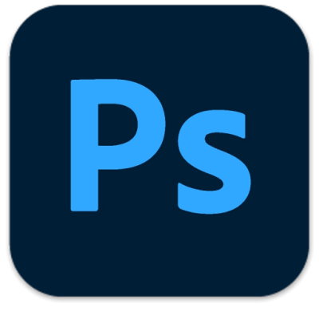

Adobe Photoshop 2020 - графический редактор, обладающиймножеством функций, включающий работу с растровыми
изображениями и
векторными инструментами. Весь программный комплекс позволяет создавать трехмерную
графику и фотореалистичные картинки, выступая
передовой программой для рисования, веб-дизайна и обработки изображений.
Фотошоп 2020 доступен на многих платформах, включая
Microsoft Windows 7, 8, 10 и Vista. Продукт активирован. Репак с таблеткой
содержит все необходимые инструменты и встроенный кряк, не
требующий дополнительных установок. Торрент-файл доступен ниже по ссылке.